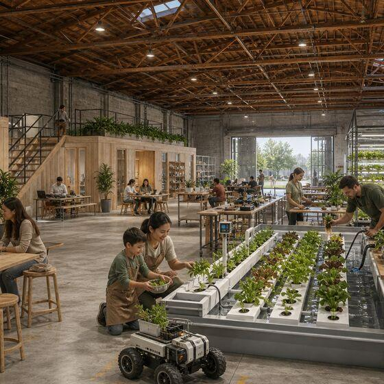
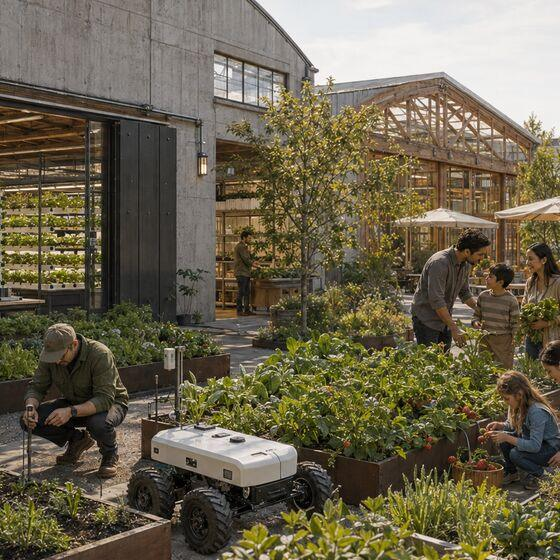

A semiconductor cluster, a robotics research base, a working farm valley, a health system and a mass timber sector, spread along a hundred miles of the Willamette.
Oregon already has the pieces. What it lacks is one place where they meet. The Silicon Forest runs the length of the Willamette, from Intel and the semiconductor cluster around Portland through instrumentation, robotics, materials and research talent all the way to Eugene. It holds one of the deepest concentrations of technology companies in the country, and Salem sits in the middle of it. What the valley lacks is a single place where these industries work near each other.
Everything below is confirmed at that location from a primary source. It is a reference rather than a complete inventory, and the omissions are honest ones: we left out anything we could not check.
Physical AI is a narrow technology that touches wide industries, and it is worth being clear which way round that is. Semiconductor manufacturing employs about 28,000 Oregonians. Health care employs three hundred thousand. Construction employs a hundred and eighteen thousand. Agriculture and food manufacturing together employ around eighty thousand. The technology on this page is small. The work it would touch is not, and most of it is not high-tech work.
| Sector in Oregon | Jobs | Average wage | Where it meets this |
|---|---|---|---|
| Health care and social assistance | 301,000 | varies widely | The fastest-growing sector in the state, projected to add 40,400 jobs by 2034. Care robotics, lab automation and rehabilitation. |
| Construction | 118,200 | not published | Near a record high statewide, though down 3.8% in Salem this year. Off-site fabrication and assembly. |
| Transportation and warehousing | 71,600 | not published | Autonomy, materials handling, and the corridor itself. |
| Agriculture, forestry and fishing | 52,924 | $49,046 | Field robotics and plant-level sensing. Farmworkers are about 39% of it, at $37,294. |
| Food manufacturing | 28,207 | $57,459 | Marion County holds 13% of the state total, second only to Multnomah. Processing automation and inspection. |
| Semiconductors and electronics | 28,338 | $173,152 | The high-wage core of the stack, and the smallest number in this table. |
| Wood products manufacturing | 22,400 | $68,275 to $79,413 | Engineered wood and sawmills. The material input to industrialized building, already made here. |
| Forestry and logging | 8,787 | $65,530 | The front of the same supply chain, mostly rural. |


Agility, an Oregon State spinout known until March 2026 as Agility Robotics, manufactures humanoid robots at RoboFab in Salem, reported as the first purpose-built factory of its kind.
Oregon State leads two federally designated Tech Hubs, in semiconductors and in mass timber, among the few universities in the country to hold two. The research engine for an applied district sits 35 miles south.
Oregon's mass-timber sector, the OSU and University of Oregon TallWood Design Institute, and the Port of Portland's timber manufacturing campus show a region turning industrial waterfronts into clean-construction innovation. The district joins that map.